houses = sm.datasets.get_rdataset("SaratogaHouses", "mosaicData").data
# 변수 설명
# print(sm.datasets.get_rdataset("SaratogaHouses", "mosaicData").__doc__)Final
총점 215
A. 다음은 Houses in Saratoga County (2006) SaratogaHouses를 이용한 질문들입니다.
A-1. 우선, 데이터셋 houses에서 (5)
- 집의 연령(
age)은 100년(포함) 이하인 것으로 필터링하고, - 욕실의 개수(
bathrooms)는 0개인 경우와 4개(포함) 이상인 경우는 제외하여, 이후 계속 사용합니다.
A-2. 집값(price)에 가장 크게 영향을 주는 것은 거주공간의 넓이(livingArea)인 것으로 보이는데, (20)
- 이를 scatterplot과 fitted line으로 확인해보고, 그 관계가 선형임을 확인해보세요.
- 거주공간의 넓이(
livingArea)로 집값(price)을 예측하는 선형모형을 세우고, - 거주공간의 넓이가 100 (square feet) 증가할 때마다 집값($)이 얼마나 증가하는지 기술하고;
mod.params이용
- 거주공간의 넓이가 집값 변량의 몇 %를 설명해주는지 기술해보세요.
mod.rsquared이용
집의 연령과 집값의 관계
오래된 집일 수록 가격이 낮아지는 현상이 있는데, 이는 집이 낡아서라기보다는 오래된 집들의 거주공간이 작은 경향이 있어, 간접적으로 집값이 낮아보이는 것일 수 있음을 살펴보고자 합니다.
다시 말하면, 거주공간의 넓이를 고려한 후 (혹은 거주공간의 넓이와는 독립적인) 집의 연령과 집값의 관계를 살펴봅니다.
(오른쪽 도식을 참고하세요. )
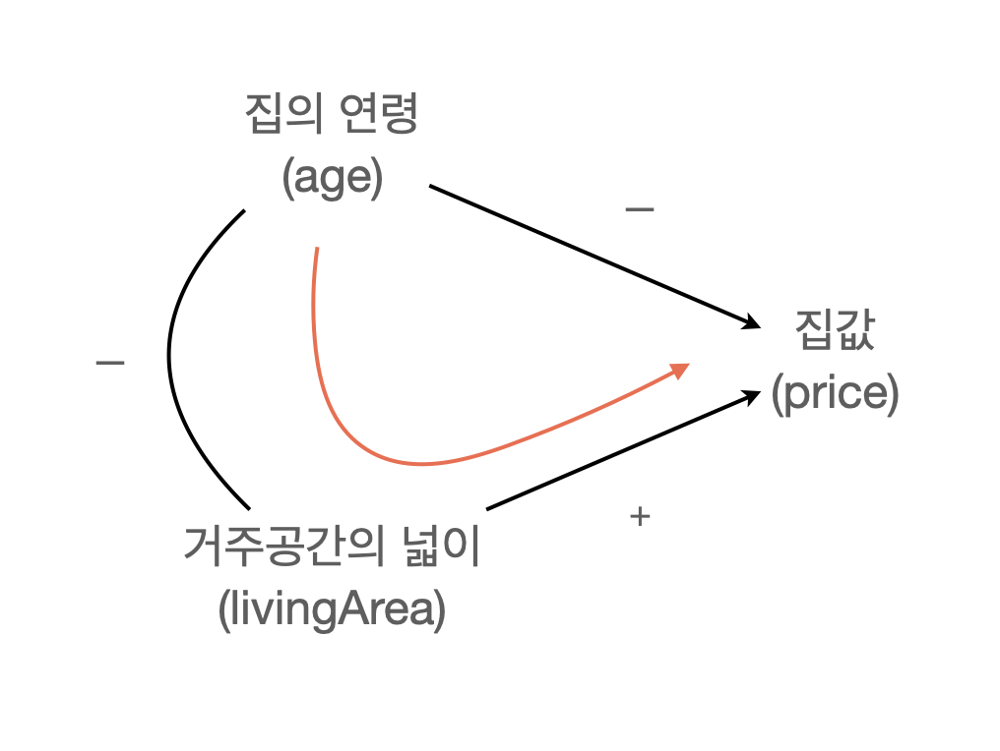
A-3. 우선, 집의 연령(age)에 따른 집값(price)의 변화를 살펴보는데, (10)
- scatterplot과 fitted line을 이용해 확인하고,
- 대략적인 경향성을 기술하고, 선형관계로 모형을 만드는 것이 적절한지 기술해보세요.
A-4. 이번에는 오래된 집일수록 거주공간도 작다는 것을 확인하는데,
- 아래와 같이 집의 연령(
age)에 따른 거주공간의 넓이(livingArea)와 집값(price)의 변화를 나란히 비교하도록 플랏을 그려보세요. (20)
.pair(y=['livingArea', 'price'])을 이용하고,.layout(size=())를 이용하여, 플랏을 크기를 조정하세요.
- 이 플랏을 보고, 오래된 집의 가격이 낮아지는 현상에 대한 가능한 설명을 기술해보세요.
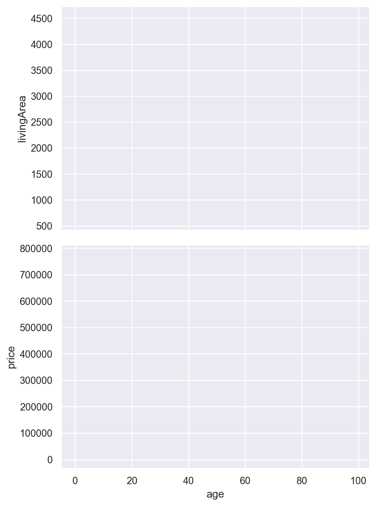
A-5. 구체적인 선형모형을 세워 위 가설을 검증해보는데, 아래 세 모형에 대한 파라미터를 확인해보고, 파라미터의 변화를 기술하여 거주공간의 넓이(livingArea)를 고려하면 집의 연령(age)이 집값에 미치는 영향이 어떠할지 다음에 따라 기술해보세요. (20)
mod1 = ols('price ~ livingArea', data = houses).fit()
mod2 = ols('price ~ age', data = houses).fit()
mod3 = ols('price ~ livingArea + age', data = houses).fit()- 집의 연령이 1년 늘때 집값이 떨어지는 정도가 mod2와 비교해서 mod3에서 추정할 때, 어떻게 바뀌는지 기술해보세요.
- 반면, 거주공간의 넓이가 1(square feet) 늘때 집값이 올라가는 정도가 mod1와 비교해서 mod3에서 추정할 때 어떻게 바뀌는지 기술해보세요.
- 왜 이런 변화가 생겼을지 앞서 알아본 (A-1) ~ (A-4)의 내용과 옆 도식을 참고해서 간단히 설명해보세요.
A-6. 다른 한편으로는 오래된 집의 집값이 떨어지는 것처럼 보이는 것은, 큰 집들 혹은 비싼 집들에서 심하게 나타나는 현상일 수도 있음을 살펴보고자 합니다. 다시 말하면, 작은 집들의 경우 오래되었다고 집값이 떨어지지 않을 수 있습니다. (15)
- 우선, 거주공간의 넓이(
livingArea)를 5개의 구간으로 나누어, 각 구간별로 집의 연령(age)에 따른 집값(price)의 변화를 scatterplot과 fitted line을 이용해 다음과 같이 확인합니다.pd.qcut()을 이용하고,facet으로 이용하여, 5개의 구간별로 플랏을 나누어 그립니다.- fitted line은 1차 선형함수로 그립니다.
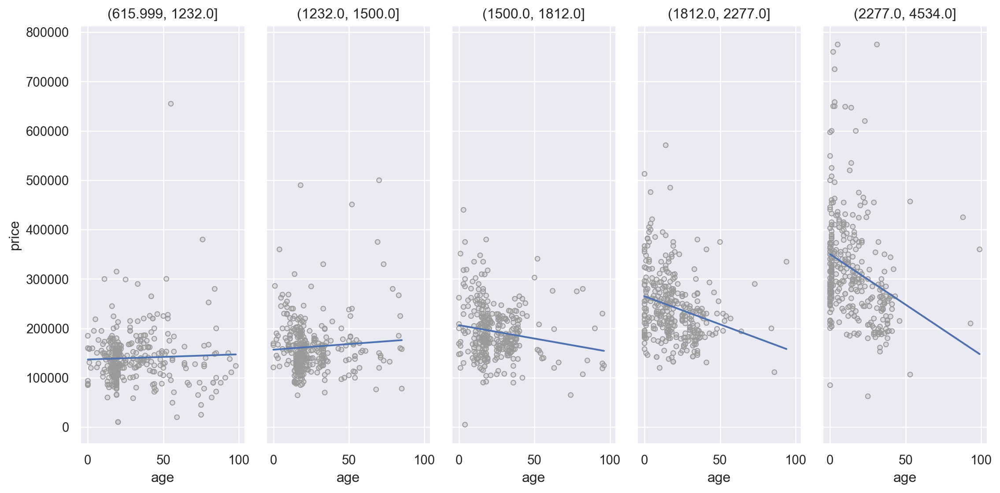
A-7. 위의 현상을 모형에 포함시키기 위해서는, 다음과 같이 상호작용항(interaction term)을 모형에 포함시켜야 합니다.
ols('price ~ livingArea * age', data = houses)
또는 ols('price ~ livingArea + age + livingArea:age', data = houses)
이 모형을 세우고, 예측변수의 다음 값들에 대해 모형의 예측값을 아래와 같이 플랏으로 그려보세요. (디테일은 무시) (15)
# age: 0년에서 100년까지 1년 단위로
age = np.arange(0, 101)
# 거주공간의 넓이: 10%, 25%, 50%, 75%, 90% 지점의 값
livingArea = np.quantile(houses.livingArea, [0.10, 0.25, 0.50, 0.75, 0.90])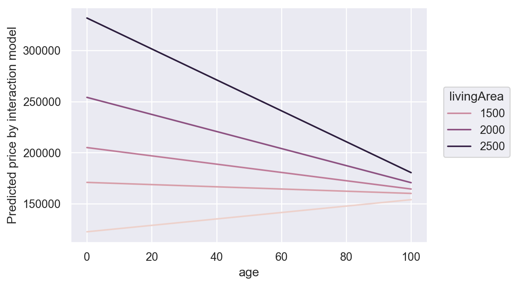
A-8. (A-7)에서 집값(price)을 거주공간의 넓이(livingArea)와 집의 연령(age)으로 예측하는 모형을 세웠는데, 이 두 변수로 설명되지 않는 집값의 변량을 욕실의 수(bathrooms)가 얼마나, 어떻게 추가로 설명할 수 있을지 살펴보고자 합니다. (20)
- 우선, (A-7)의 모형으로 설명되지 않는 집값(
price)의 부분, 즉 residualized된 집값을resid라는 변수로 추가하고, - 다음과 같이, 거주공간의 넓이(
livingArea)와 redualized된 집값(resid)의 관계를 욕실의 수(bathrooms)에 따라 나누어 살펴봅니다. (디테일은 무시)- fitted line은 1차 선형함수로 그립니다.
.limit(y=(-100000, 100000))를 이용하여, 확대해서 봅니다.
- 욕실의 수가 적을 때를 중심으로 아래 플랏이 암시하는 바를 기술해보세요.
- Y축은 거주공간의 넓이(
livingArea)가 이미 residualized된 집값(resid)임을 고려하세요.
- Y축은 거주공간의 넓이(
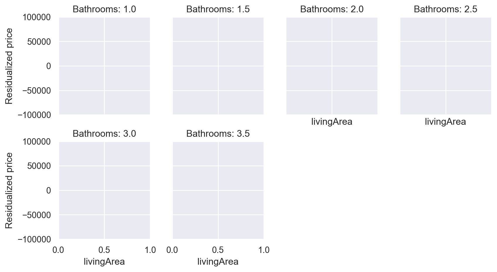
B. 다음은 Bike Sharing in Washington D.C. Dataset를 이용한 질문들입니다.
Data: hour.csv
- dteday: Date
- season: Season (1:springer, 2:summer, 3:fall, 4:winter)
- yr: Year (0: 2011, 1:2012)
- mnth: Month (1 to 12)
- hr: Hour (0 to 23)
- holiday: weather day is holiday or not (extracted from Holiday Schedule)
- weekday: Day of the week
- workingday: If day is neither weekend nor holiday is 1, otherwise is 0.
- weathersit: (extracted from Freemeteo)
- 1: Clear, Few clouds, Partly cloudy, Partly cloudy
- 2: Mist + Cloudy, Mist + Broken clouds, Mist + Few clouds, Mist
- 3: Light Snow, Light Rain + Thunderstorm + Scattered clouds, Light Rain + Scattered clouds
- 4: Heavy Rain + Ice Pallets + Thunderstorm + Mist, Snow + Fog
- temp: Normalized temperature in Celsius. The values are derived via (t-t_min)/(t_max-t_min), t_min=-8, t_max=+39 (only in hourly scale)
- casual: count of casual users
- registered: count of registered users
- cnt: count of total rental bikes including both casual and registered
우선, 다음과 같이 데이터를 가공한 후 진행합니다.
bikeshare = pd.read_csv("data/hour.csv", parse_dates=["dteday"])
bikeshare = bikeshare.query('yr == 1') # 2012년 데이터만 사용
bikeshare = bikeshare.assign(
lregistered = np.log2(bikeshare.registered + 1), # log2 변환
lcasual = np.log2(bikeshare.casual + 1), # log2 변환
wday = bikeshare.dteday.dt.day_name().str[:3], # 요일
)B-1. 자전거 대여수가 하루의 시간(hr)에 따라 어떻게 변하는지 rangeplot이나 boxplot을 통해 살펴보세요. (10)
- 이 때, 등록된 사용자들(
lregistered)과 비등록사용자들(lcasual)을 따로 살펴보고, - 이 두 그룹을 따로 분석해야 하는지에 대해 간단히 기술해보세요.
아래 rangeplot 함수를 써도 되고, 자신만의 함수를 써도 됩니다.
def rangeplot()
def rangeplot(df, x, y, color=None, alpha=0.1, marker="<", est="median"):
return (
so.Plot(df, x=x, y=y, color=color)
.add(so.Range(), so.Est("median", errorbar=("pi", 50)), so.Dodge())
.add(so.Dots(pointsize=8, marker=marker), so.Agg("median"), so.Dodge())
.add(so.Dots(pointsize=8, marker=marker, color="red"), so.Agg(est), so.Dodge())
.scale(color="Dark2")
.theme({**sns.axes_style("whitegrid")})
)이제부터는 등록된 사용자들(lregistered)에 대해서만 분석합니다.
B-2. (B-1)에서 살펴본 관계가 요일(wday)에 따라 다른지 다음과 같이 facet으로 나누어 살펴보는데 (10)
- 주말과 평일이 뚜렷이 구분되는 패턴으로 나타남을 확인하고,
holiday인 날은(holiday == 1) 요일에 상관없이 주말과 비슷한 패턴으로 나타남을 확인합니다.
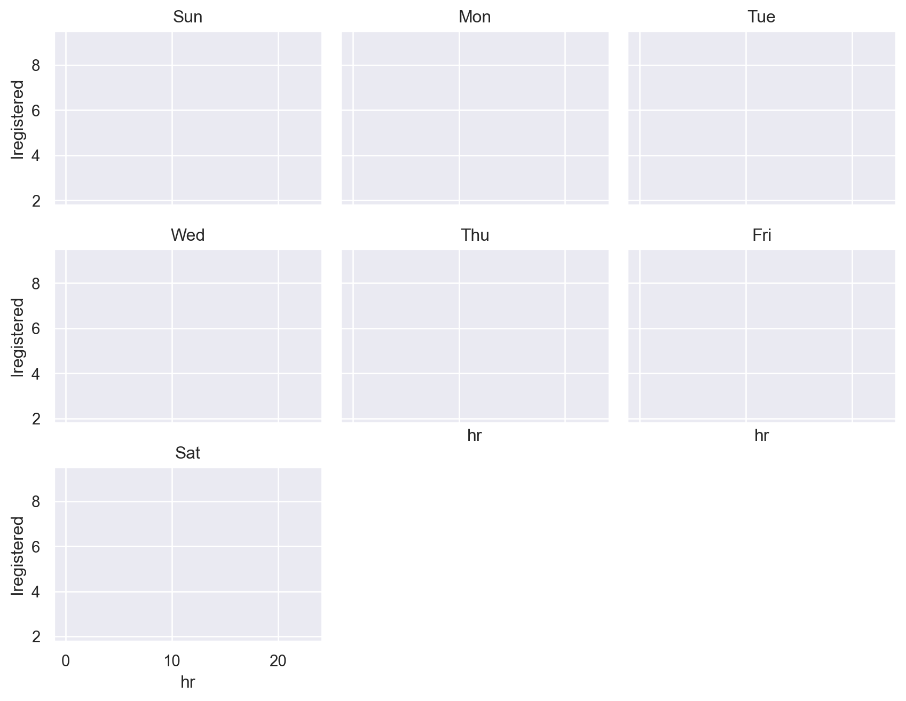
holiday인 날(holiday == 1)로 한정했을 때;
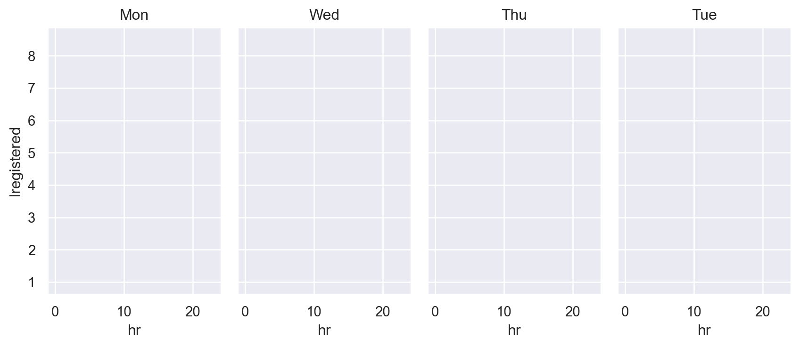
B-3. 이제 주말(토,일)과 holiday가 1로 표시되어있는 workingday를 다음과 같이 recode합니다. (15)
workingday가 1이면weekday로 표시하고, 0이면,weekend로 표시하도록 바꿉니다.- 확인차
workingday여부에 따라 “하루 시간(hr)에 따른 자전거 대여수(lregistered)의 변화”를 아래와 같이 살펴보고, - 두드러진 특징을 간략히 기술하고, 왜 이런 패턴이 나타날지 대략 추측해보세요.
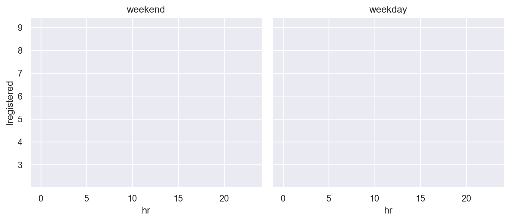
B-4. 시간(hr)에 따른 자전거 대여수(lregistered)의 변화가 부드러운 곡선의 형태로 나타나므로 이 패턴을 잘 잡아낼 수 있도록 natural spline으로 fit한 모형을 다음과 같이 만듭니다. (10)
mod_ns = ols("lregistered ~ cr(hr, 12) * workingday", data=bikeshare).fit()이 모형에 대해, 예측변수의 다음 값들에 대해 모형의 예측값을 그려보는데, lregistered가 아닌 원래 단위인 대여 수로 환원하여 예측값을 계산 후 아래와 같이 그려보세요. (디테일은 무시)
lregistered는 \(log_2{(registered + 1)}\)으로 변환되었습니다.
hr = np.arange(0, 24, 5/60) # 5분 단위로 24시간
workingday = np.array(["weekday", "weekend"]) # 평일, 주말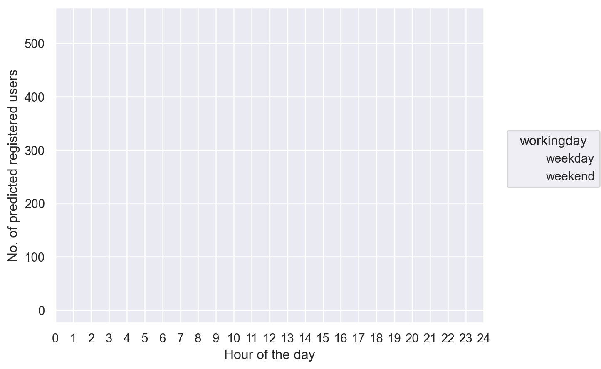
B-5. 기온(temp)에 따른 자전거 대여수(lregistered)의 변화 패턴이 주말여부(workingday)에 따라 다른지를 (10)
- 플랏을 통해 기온의 영향력에 대한 패턴을 확인하고, 기온과 주말여부가 상호작용하는지 판단한 후,
- 위에서 세운
mod_ns모형에 기온을 예측변수로 추가한 모형을 세워보세요.
B-6. (B-5)에서 세운 모형을 mod_ns2로 명명하고, “이 모형으로 예측되지 않는 자전거 대여수(lregistered)”인 잔차를 구해 데이터에 추가한 후, (15)
- 다음과 같이 달(
mnth)에 따른 잔차의 변화를 플랏으로 살펴보고, 이 플랏이 의미하는 바를 기술해보세요. - 날씨(
weathersit)에 따른 잔차의 변화도 플랏으로 살펴본 후, 플랏이 의미하는 바를 기술해보세요.
weathersit:
- 1: Clear, Few clouds, Partly cloudy, Partly cloudy
- 2: Mist + Cloudy, Mist + Broken clouds, Mist + Few clouds, Mist
- 3: Light Snow, Light Rain + Thunderstorm + Scattered clouds, Light Rain + Scattered clouds
- 4: Heavy Rain + Ice Pallets + Thunderstorm + Mist, Snow + Fog
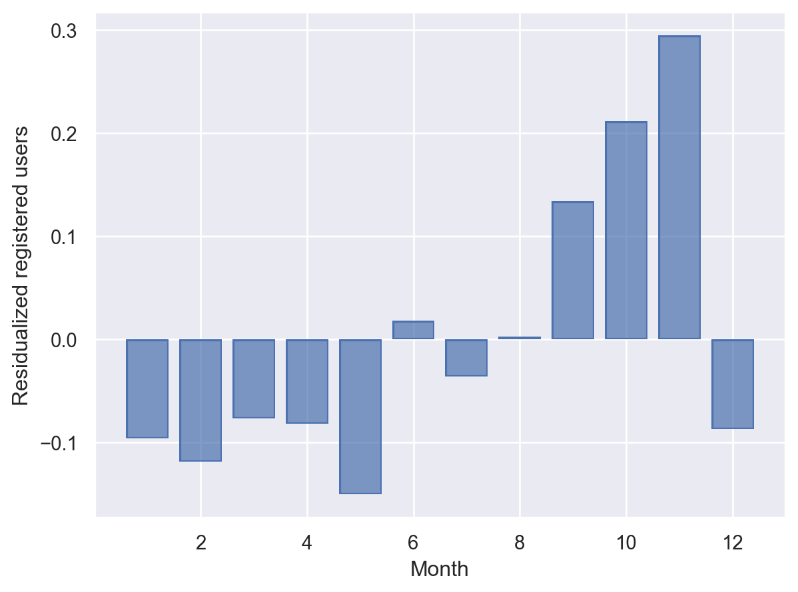
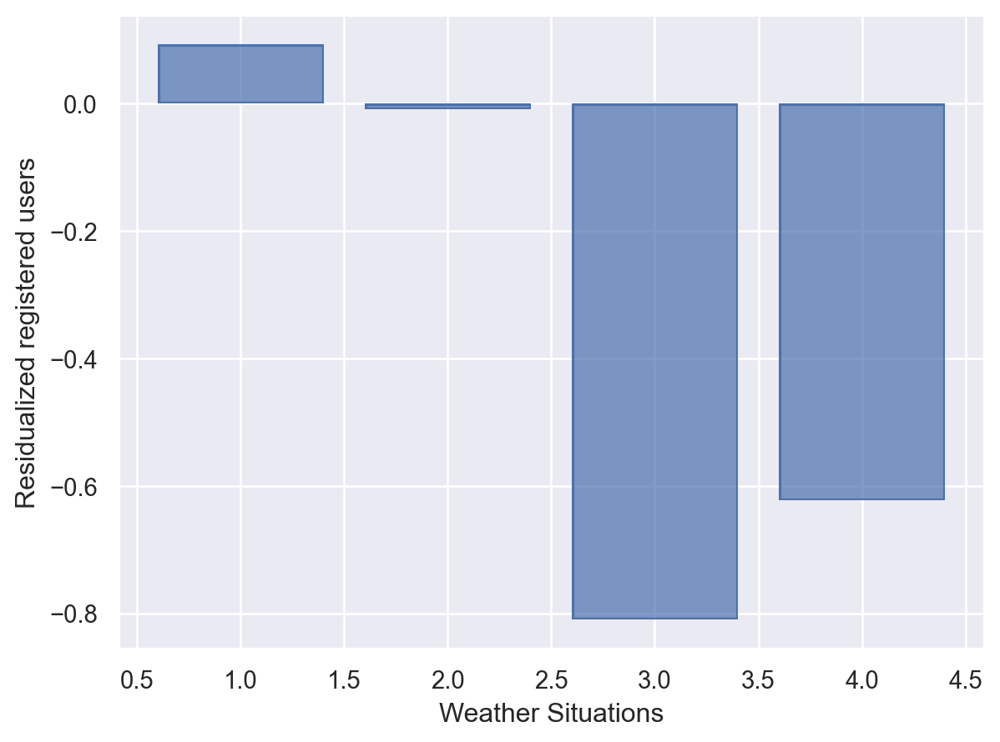
B-7. 자전거 대여수(lregistered)를 예측하는 모형에 예측변수를 추가하는 소위 “위계적 분석”을 다음과 같이 수행합니다. 예측변수들은 앞서 분석한 결과를 바탕으로 적절히 변형해서 모형에 추가합니다. (10)
- mod1:
hr만 포함한 모형 - mod2:
hr과workingday를 포함한 모형 - mod3:
hr,workingday,temp를 포함한 모형 - mod4:
hr,workingday,temp,weathersit(명목변수)를 포함한 모형 - mod5:
hr,workingday,temp,weathersit(명목변수),mnth(명목변수)를 포함한 모형
- 각 모형에 대한 \(R^2\)값을 표시하고,
- 예측변수의 추가에 따른 \(R^2\)값의 증가분을 살펴보고, 각 예측변수들의 공헌도에 대해 간략히 기술하세요.
B-8. Casual biker(lcasual)들에 대해서도 동일한 분석을 하는데, 모형은 registered bikers에 대한 모형과 동일하다고 가정하고, (5)
- 각 모형에 대한 \(R^2\)값을 표시하고,
- 예측변수의 추가에 따른 \(R^2\)값의 증가분을 살펴보고, 각 예측변수들의 공헌도에 대해 간략히 기술하세요.